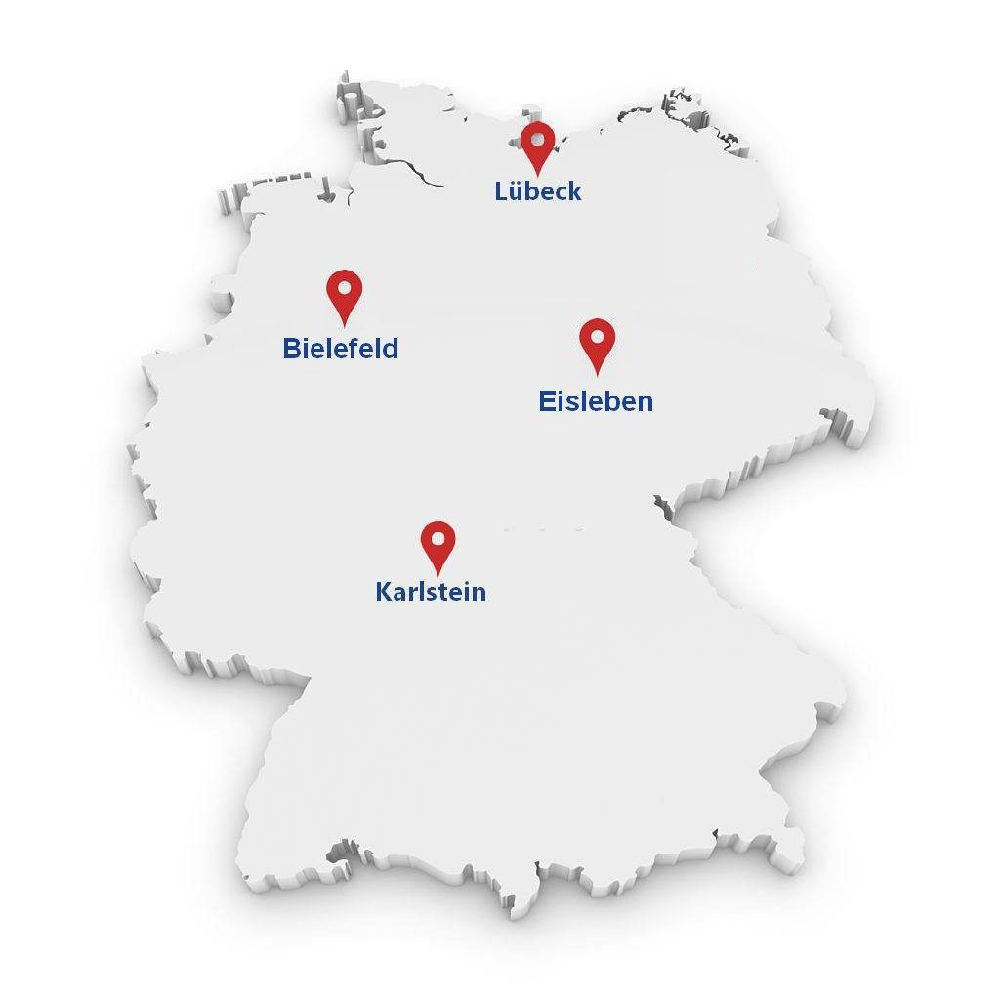
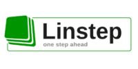
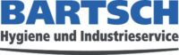

Profis Industrie Service GmbH
Professionnel. Particulier. Sûr.
C'est notre savoir-faire. Notre équipe expérimentée a travaillé avec plus de 80 clients dans différentes régions sur toute l'Allemagne. Profis Industrie Service GmbH combine son expérience avec la précision et le savoir afin de vous offrir le meilleur service pour vos besoins spécifiques.
ContactUn service de haute qualité
Un service de haute qualité ne se limite pas à répondre aux attentes du client mais les dépasse. Apprenez à connaître les bases d'un service de haute qualité et comment nous y parvenons.
En savoir plus →02Conseils professionnels
Les conseils compétents de notre personnel spécialisé sont tout aussi importants que l'exécution du service lui-même. Il est essentiel de trouver les méthodes appropriées pour répondre à vos besoins et créer un environnement hygiénique.
En savoir plus →03Test de concepts
Bien que nos services et concepts ne soient pas un objet physique sur lequel vous pouvez enquêter, il est important d'avoir une première impression. Apprenez-en plus sur la façon dont vous pouvez tester nos concepts de nettoyage.
En savoir plus →04Protection contre l'infection
Que devons-nous faire pour réduire au maximum le risque d'infection ?
En savoir plus →
Notre vision
Produire des aliments sains dans un environnement super propre est le lancement d'une vie saine. Pour notre part, l'hygiène ne signifie pas de retravailler, mais en commençant par une qualité élevée dès le début.
Nos partenaires

